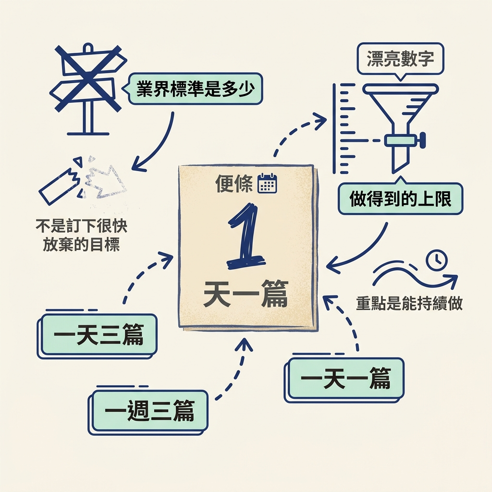
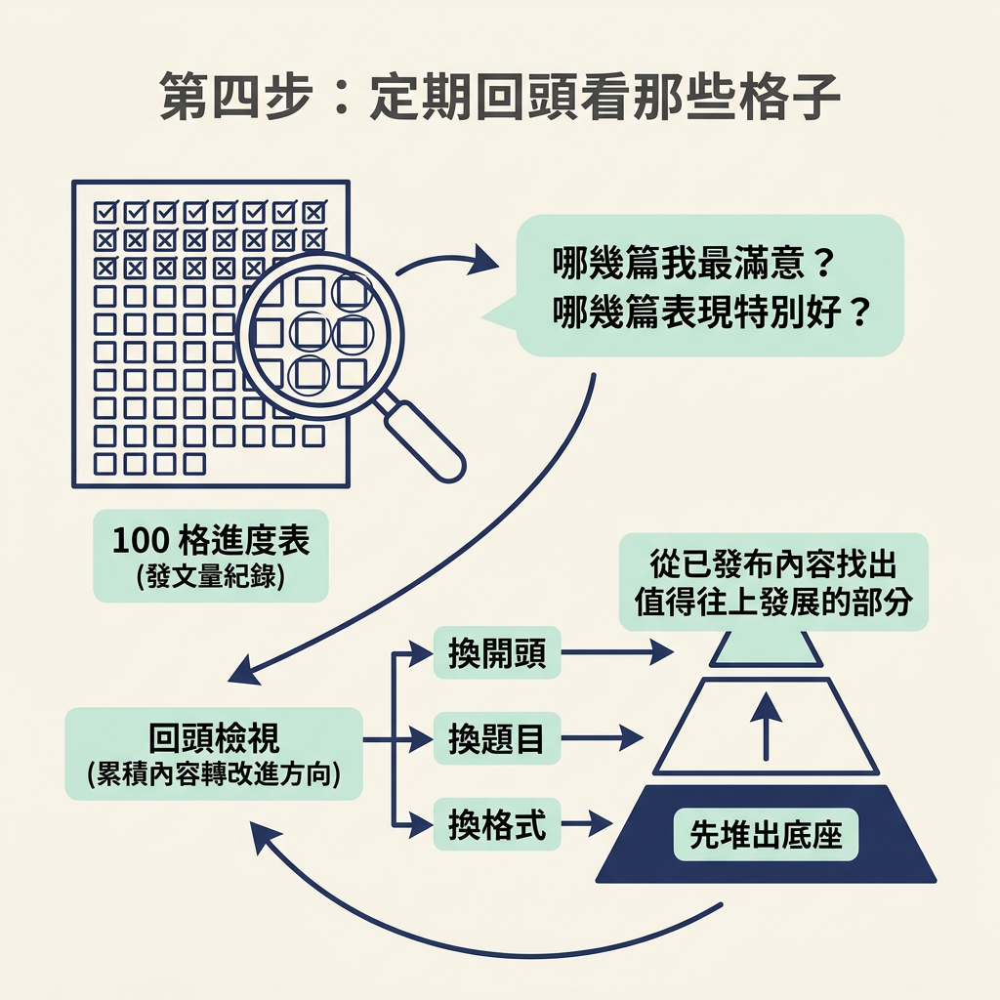

完成這一步，你會訂出一個自己守得住的發文節奏，並做好一張 100 格進度表，追蹤已經發出的內容。開始前，你只需要先發過至少一篇，並知道自己要在哪個平台發文。
前三節，我們談了為什麼要多發、如何透過累積讓內容變好，以及起步時為什麼要親手做。這些原則要真正帶來進展，還需要一個每天做得到、也看得見成果的習慣。
這一節會把前面的想法收成一套可計數的發文系統：先訂出發文節奏，再用 100 格記錄已經送出的內容，最後定期回看成果。這也把發文量接回 Content Pyramid：先用內容累積底座，再從中找出值得改進的方向。
先決定自己打算多久發一次。訂節奏時，別急著找一個看起來漂亮的數字；要找的是自己真的做得到的上限。課程的主張是「能發多少就盡量發」，所以先問問自己：「以我現在的時間和精力，最多能穩定發多少？」而不是先猜「業界標準是多少」。
課程提供的參考點是講師早期一天發三篇。你可以拿這個數字校準自己的節奏；如果一天三篇做不到，也可以改成一天一篇或一週三篇。重點是選一個能持續做到的數字，而不是訂下很快就會放棄的目標。

預期結果：寫下一個明確的數字，例如「一天一篇」。先把它寫下來，不要只記在腦中。
訂好節奏後，為前 100 篇內容準備一張進度表。做法很簡單：在筆記本或牆上的板子上畫出100 個格子，每一格代表一篇內容。
格子能讓已經送出的內容看得見。每劃掉一格，你就更接近 100 篇，也能把這個大目標拆成眼前的一小步：不用一次想完 100 篇，只要先完成今天這一格。
預期結果：做好一張 100 格的表。你可以印出下面這張表，也可以照著畫進筆記本。
| 1 | 2 | 3 | 4 | 5 | 6 | 7 | 8 | 9 | 10 |
| 11 | 12 | 13 | 14 | 15 | 16 | 17 | 18 | 19 | 20 |
| 21 | 22 | 23 | 24 | 25 | 26 | 27 | 28 | 29 | 30 |
| 31 | 32 | 33 | 34 | 35 | 36 | 37 | 38 | 39 | 40 |
| 41 | 42 | 43 | 44 | 45 | 46 | 47 | 48 | 49 | 50 |
| 51 | 52 | 53 | 54 | 55 | 56 | 57 | 58 | 59 | 60 |
| 61 | 62 | 63 | 64 | 65 | 66 | 67 | 68 | 69 | 70 |
| 71 | 72 | 73 | 74 | 75 | 76 | 77 | 78 | 79 | 80 |
| 81 | 82 | 83 | 84 | 85 | 86 | 87 | 88 | 89 | 90 |
| 91 | 92 | 93 | 94 | 95 | 96 | 97 | 98 | 99 | 100 |
進度表準備好後，照著一條規則做就好：每發出一篇內容，就劃掉一格。發文後順手記下來，不需要再設計複雜的追蹤方式。
預期結果：隨著發文，表上的格子會一格一格被劃掉。每完成一格，就有一個看得見的進展；你不必等到第 100 篇，才知道自己確實在前進。
最後，把進度表接回 Content Pyramid。每隔一段時間，回頭看看已經發出的內容，問自己兩個問題：哪幾篇是我自己最滿意的？哪幾篇的表現特別好？
接著，從這些內容找出下一步可以調整的地方，例如換個開頭、題目或格式。進度表記錄的是發文量；回頭檢視，則讓你把累積的內容轉成改進方向。這就是 Content Pyramid 的連結：先堆出底座，再從已發布的內容中找出值得往上發展的部分。

完成這四步後，你會有一個寫下來的發文節奏，例如一天一篇、一張 100 格進度表，以及一個「發完就劃格、定期回看」的循環。你也能清楚確認自己今天有沒有發文，以及目前累積到第幾篇。
前三節已經說明了大量優先、Content Pyramid，以及先手動再自動的原則，這裡就不再重講。現在，回去發出一篇內容，再把進度表的第一格劃掉，開始累積你的前 100 篇。
先訂一個自己做得到的發文節奏，再畫出 100 格進度表。每發一篇就劃掉一格，並定期回看哪些內容最滿意、哪些表現最好。進度表幫你追蹤發文量；回看成果，則把累積的內容接回 Content Pyramid，作為下一步改進的線索。